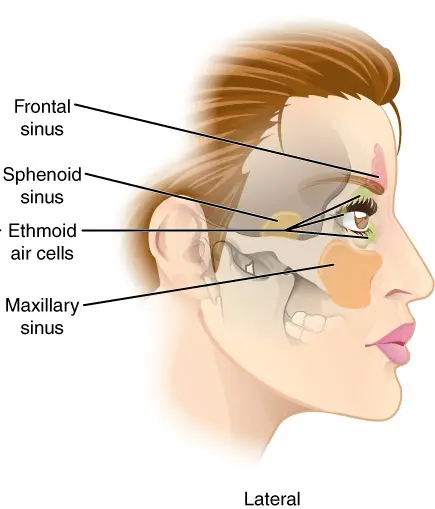

DX.10 — Tumeur maligne nasosinusienne 🚩 E4
Une obstruction nasale d’un seul côté, avec saignements ou croûtes, qui persiste après un traitement court, impose un examen par l’oto-rhino-laryngologiste (ORL) S6S10. Seule la biopsie confirme le cancer, et une équipe multidisciplinaire décide ensuite du traitement S6S3.
1. Définition
La tumeur maligne nasosinusienne est un cancer né le plus souvent de la muqueuse qui tapisse la cavité nasale et les sinus paranasaux, surtout ethmoïdal et maxillaire S2S1. Le terme regroupe des carcinomes, des adénocarcinomes et des neuroblastomes olfactifs, de comportement biologique très variable S6.
2. Épidémiologie (Suisse, puis Europe)
Le Centre hospitalier universitaire vaudois (CHUV) indique que ces tumeurs représentent moins de 1 % de tous les cancers et 3 % des cancers des voies aérodigestives supérieures S2. En Europe, leur incidence ajustée reste inférieure à 10 cas par million d’habitants, avec une prédominance masculine S6. Le tableau des chiffres réunit les données suisses puis européennes, et la fenêtre des types histologiques décrit leur répartition S2S6.
Cancer nasosinusien : chiffres suisses, puis européens
| Donnée | Population et lieu | Année | Source |
|---|---|---|---|
| Moins de 1 % de tous les cancers | Suisse, estimation du CHUV | 2026 | S2 |
| 3 % des cancers des voies aérodigestives supérieures | Suisse, estimation du CHUV | 2026 | S2 |
| Poussière de bois : deuxième cause de cancer professionnel après l’amiante | Suisse, Suva | 2019 | S5 |
| Incidence ajustée inférieure à 10 par million (5 à 9 chez l’homme, 2 à 5 chez la femme) | Europe et monde, ESMO-EURACAN | 2025 | S6 |
| Moins de 5 % des cancers de la tête et du cou | Europe, ESMO-EURACAN | 2025 | S6 |
| Rapport homme-femme de 1,3 en Norvège à 2,5 en Italie et en Finlande | Europe | 2025 | S6 |
| La plupart des patients ont 65 ans ou plus | Monde, sauf certains pays d’Asie orientale | 2025 | S6 |
| Survie relative à 5 ans de 50 % pour le carcinome épidermoïde | Europe, diagnostics 2000 à 2007 | 2025 | S6 |
| Survie relative de l’adénocarcinome : 63,1 %, 47,8 % et 36,6 % à 5, 10 et 15 ans | Diagnostics 1973 à 2009 | 2025 | S6 |
Aucune incidence suisse propre à ce cancer n’a été trouvée ; les chiffres du CHUV restent des proportions hospitalières S2.
La survie relative à 5 ans est la plus basse dans les pays d’Europe de l’Est, mais elle s’améliore depuis 2010 S6.
Types histologiques et sièges
| Type | Fréquence ou trait | Siège préférentiel | Facteur associé | Source |
|---|---|---|---|---|
| Carcinome épidermoïde | 50 à 75 % des tumeurs nasosinusiennes | Tous les sièges | Tabac, papillomavirus humain (HPV) dans la forme non kératinisante | S6 |
| Adénocarcinome de type intestinal | Deuxième type le plus fréquent | Ethmoïde et sinus maxillaire | Poussières de bois et de cuir | S6S1 |
| Neuroblastome olfactif | Rechute possible 10 à 15 ans après le traitement | Fente olfactive | Aucun facteur cité | S6 |
| Carcinome indifférencié nasosinusien | Tumeur de haut grade, diagnostic d’exclusion | Variable | Mutations du gène IDH2 (isocitrate déshydrogénase 2) possibles | S6 |
| Carcinome NUT (protéine nucléaire du testicule) | Réarrangement du gène NUTM1 (famille de la protéine nucléaire du testicule, membre 1) | Variable | Aucun facteur cité | S6 |
| Carcinome sur papillome inversé | Synchrone ou métachrone au papillome | Fosse nasale | Papillome inversé | S6 |
Le siège le plus fréquent reste la cavité nasale, suivie des sinus maxillaire, ethmoïdal, sphénoïdal et frontal S6.
Les épithéliomas, surtout épidermoïdes et adénocarcinomes, forment 80 % des cas, ce qui oriente la biopsie S6.
3. Physiopathologie
La tumeur naît de la muqueuse, grandit dans une cavité close, puis franchit les parois osseuses vers l’orbite, la base du crâne ou la joue S2S6. Le tableau des voies d’extension relie chaque paroi franchie au symptôme qui en résulte S6S7.
Voies d’extension et symptômes qu’elles provoquent
| Extension | Structure atteinte | Symptôme | Classement | Source |
|---|---|---|---|---|
| Muqueuse nasale | Fosse nasale d’un côté | Obstruction, saignement, écoulement unilatéral | Stade local | S2S7 |
| Paroi orbitaire | Os, puis graisse extraconique | Diplopie, œil qui larmoie, exophtalmie | Stade tumoral T3 (paroi atteinte) ; T4a si le contenu orbitaire est envahi | S6S7 |
| Apex orbitaire, sinus caverneux, chiasma | Nerfs optiques et oculomoteurs | Baisse de vision, ophtalmoplégie | Tumeur non résécable | S6 |
| Base du crâne antérieure | Dure-mère, cerveau | Signes neurologiques | T3 si os, T4b si dure-mère ou cerveau | S6 |
| Fosse ptérygopalatine et infratemporale | Muscles masticateurs | Difficulté à ouvrir la bouche | T4a pour le sinus maxillaire | S6S2 |
| Nerfs | Branches du trijumeau | Engourdissement de la joue, douleur faciale | Extension périneurale | S6S7 |
| Voie lymphatique | Ganglions rétropharyngés, puis cervicaux | Masse dans le cou | Atteinte ganglionnaire | S6S2 |
La périoste reste la barrière la plus efficace contre l’extension ; l’imagerie par résonance magnétique (IRM) la montre mieux que le scanner S6.
Les métastases à distance restent rares au diagnostic ; elles touchent surtout le poumon, le foie et l’os S6.
Sinus paranasaux, vue de face. Cette illustration en couleurs montre, projetés sur le visage, le sinus frontal en rose, les cellules ethmoïdales en jaune-vert et les sinus maxillaires en orange S12.

Le lecteur doit d’abord situer seul chaque sinus par rapport aux yeux et au nez.
Sur la copie annotée, quatre repères situent le sinus frontal, l’ethmoïde et les deux sinus maxillaires.
- Le repère 1 montre le sinus frontal, siège le plus rare des cancers nasosinusiens S12S6.
- Le repère 2 montre l’ethmoïde, entre les deux orbites, siège typique de l’adénocarcinome lié aux poussières de bois S12S6S1.
- Le repère 3 montre le sinus maxillaire droit du patient, voisin de la joue, des dents et du plancher de l’orbite S12S6.
- Le repère 4 montre le sinus maxillaire gauche ; une atteinte asymétrique des deux côtés oriente vers une lésion locale, ce qui reste une déduction S12S10.
Ce que l’image décide. La proximité de l’ethmoïde avec l’orbite explique pourquoi une diplopie ou un larmoiement unilatéral signent une extension et imposent l’imagerie S6S7.
4. Démarche diagnostique
La démarche part d’une obstruction nasale unilatérale qui persiste ; elle cherche les signes d’extension, puis confie l’endoscopie, l’imagerie et la biopsie à l’oto-rhino-laryngologiste (ORL) S6S1. Le tableau des étapes donne le seuil de chaque décision, tandis que la fenêtre des délais précise le rythme attendu S6S9.
Démarche diagnostique pas à pas
| Étape | Question | Outil | Seuil ou signe | Décision | Source |
|---|---|---|---|---|---|
| 1. Côté | L’obstruction est-elle unilatérale ? | Anamnèse | Obstruction d’un seul côté | Suspicion de tumeur | S6S7S2 |
| 2. Durée | Les symptômes persistent-ils malgré un traitement court ? | Anamnèse | Persistance après au plus 3 semaines de traitement | Avis spécialisé | S6 |
| 3. Signes associés | Saignement, croûtes, cacosmie ? | Anamnèse et rhinoscopie | Un signe suffit | Endoscopie et imagerie urgentes | S10 |
| 4. Extension | Signe orbitaire, neurologique ou dentaire ? | Examen ciblé | Diplopie, hypoesthésie, trismus, dent mobile | Stade avancé probable | S6S7 |
| 5. Endoscopie | Où siège la tumeur ? | Nasofibroscopie par l’ORL | Masse visible | Imagerie avant biopsie | S6S9 |
| 6. Imagerie | Quelle extension ? | IRM et scanner | Orbite, base du crâne, fosse infratemporale | Stadification | S6 |
| 7. Biopsie | Quel type histologique ? | Biopsie endoscopique transnasale | Histologie et immunohistochimie | Colloque multidisciplinaire | S6S1S3 |
Délais et responsabilités
| Moment | Acteur | Action | Repère chiffré | Source |
|---|---|---|---|---|
| Symptômes nasosinusiens de 3 semaines ou plus | Médecin de famille | Examen ORL complet avec endoscopie | Recommandation de grade V, A | S6 |
| Symptômes qui s’aggravent ou ne s’améliorent pas en quelques semaines | Médecin de famille | Consultation et orientation | Diplopie brutale : consultation sans attendre | S7 |
| Suspicion de cancer | Médecin de famille | Orientation urgente vers le spécialiste | Examens et biopsie | S7S9 |
| Résultat de la nasofibroscopie | ORL | Explication le jour même | Le jour de l’examen | S9 |
| Résultat de la biopsie | Pathologiste | Classement selon l’agressivité | 1 à 2 semaines au Royaume-Uni | S9S3 |
| Diagnostic histologique | Colloque interdisciplinaire | Proposition de traitement personnalisée | Avant tout traitement | S3 |
Un second avis d’un pathologiste expérimenté est vivement recommandé, car les erreurs de diagnostic ne sont pas rares dans ces tumeurs S6.
5. Anamnèse ciblée et drapeaux rouges
L’anamnèse recherche le côté, la durée et les saignements, puis l’exposition professionnelle aux poussières de bois ou de cuir et le tabac S1S2S8. Les questions ciblées sont classées par intérêt, et les drapeaux rouges signalent une extension déjà avancée S6S7.
Questions ciblées et leur interprétation
| Question | Réponse évocatrice | Interprétation | Source |
|---|---|---|---|
| Le nez est-il bouché d’un seul côté, toujours le même ? | Oui, sans alternance | Lésion locale, tumeur à exclure | S7S2 |
| Saignez-vous du nez, toujours du même côté ? | Saignements récidivants | Symptôme précoce du cancer des sinus | S1S2 |
| Le mucus contient-il du sang ? | Oui | Écoulement suspect | S7 |
| Sentez-vous moins bien les odeurs ? | Baisse d’odorat | Symptôme précoce possible | S7S2 |
| Avez-vous travaillé le bois, le cuir ou le textile ? | Ébéniste, menuisier, travail du cuir | Facteur de risque professionnel majeur | S1S8S2 |
| Quels bois avez-vous travaillés ? | Hêtre, chêne, bois tropicaux | Poussières cancérogènes | S4S5 |
| Fumez-vous, ou avez-vous fumé ? | Tabagisme actif ou passif | Facteur de risque, surtout du carcinome épidermoïde | S2S6 |
| Avez-vous reçu une radiothérapie pour un rétinoblastome dans l’enfance ? | Oui | Facteur de risque cité par le service de santé britannique (NHS) | S8 |
| Le traitement d’épreuve a-t-il fait disparaître les symptômes ? | Persistance après 3 semaines au plus | Avis spécialisé | S6 |
Drapeaux rouges : signes d’extension
| Signe | Ce qu’il traduit | Conduite | Source |
|---|---|---|---|
| Vision double, perte de vision, œil saillant | Extension orbitaire | Consultation sans attendre, imagerie | S7S6 |
| Œil qui larmoie d’un seul côté | Atteinte des voies lacrymales | Imagerie | S7S6 |
| Douleur ou engourdissement facial persistant | Extension nerveuse ou osseuse | Imagerie | S7S2 |
| Difficulté à ouvrir la bouche | Atteinte des muscles masticateurs | Imagerie | S7S2 |
| Dent qui se déchausse, masse du palais | Extension vers la cavité buccale | Biopsie | S7 |
| Oreille bouchée ou douloureuse d’un côté | Atteinte de la trompe auditive, déduction anatomique | Examen ORL | S7S2 |
| Masse dans le cou | Métastase ganglionnaire | Cytoponction échoguidée | S2S3 |
| Œdème périorbitaire, céphalée sévère, signes neurologiques | Complication grave | Avis immédiat | S10 |
Ces signes traduisent une maladie avancée, alors que les premiers symptômes ressemblent à ceux de maladies banales du nez S6S2.
6. Examen physique ciblé, région par région
L’examen suit les régions que la tumeur envahit : fosse nasale, orbite, face et bouche, oreille, cou et nerfs crâniens S6S7. Chaque fenêtre précise le geste, le signe anormal et la conduite qui en découle S6.
Région 1 — fosse nasale
| Geste | Signe anormal | Conduite | Source |
|---|---|---|---|
| Rhinoscopie antérieure | Masse unilatérale, saignante ou croûteuse | Endoscopie par l’ORL | S10S6 |
| Comparaison des deux côtés | Obstruction d’un seul côté | Suspicion de lésion locale | S7 |
| Inspection de la bouche et de la gorge | Masse du palais | Biopsie | S7 |
| Endoscopie (ORL) | Site, extension locale, prélèvement | Imagerie avant biopsie | S6 |
Région 2 — orbite et œil
| Geste | Signe anormal | Signification | Source |
|---|---|---|---|
| Inspection des globes | Exophtalmie | Extension orbitaire | S7 |
| Motilité oculaire | Limitation des mouvements, diplopie | Signe de maladie avancée | S6S7 |
| Acuité visuelle | Perte de vision | Signe de maladie avancée | S6S7 |
| Inspection des voies lacrymales | Larmoiement unilatéral | Atteinte des voies lacrymales | S7S6 |
Région 3 — face, joue et bouche
| Geste | Signe anormal | Signification | Source |
|---|---|---|---|
| Palpation de la joue | Masse, déformation de l’étage moyen | Effet de masse avancé | S1S7 |
| Sensibilité de la joue | Hypoesthésie du trijumeau | Signe de maladie avancée | S6S2 |
| Ouverture buccale | Trismus | Extension aux muscles masticateurs | S7S2 |
| Examen dentaire | Dent mobile | Extension vers l’arcade | S7 |
Région 5 — cou
| Geste | Signe anormal | Signification | Source |
|---|---|---|---|
| Palpation des aires ganglionnaires | Ganglion submandibulaire ou jugulodigastrique | Drainage lymphatique principal | S6 |
| Échographie cervicale | Ganglion suspect | Cytoponction échoguidée | S9S3 |
| Fréquence | Atteinte ganglionnaire de 14 % (4 à 27 %) dans le carcinome épidermoïde | Rare si la tumeur reste dans les sinus | S6 |
Région 6 — nerfs crâniens
| Nerf | Signe | Signification | Source |
|---|---|---|---|
| Nerf optique | Baisse de vision | Apex orbitaire ou chiasma | S6 |
| Nerfs oculomoteurs | Ophtalmoplégie | Orbite ou sinus caverneux | S6 |
| Nerf trijumeau | Hypoesthésie faciale | Extension périneurale | S6 |
| Nerf olfactif | Perte d’odorat | Atteinte de la fente olfactive, déduction anatomique | S7 |
Une neuropathie crânienne signe une maladie avancée, si bien qu’elle impose l’IRM, meilleure pour l’extension périneurale S6.
7. Approche syndromique
La tumeur maligne entre dans le syndrome d’obstruction nasale unilatérale fixe, qu’elle partage avec la déviation de la cloison, le corps étranger et le polype isolé S10S6. Le tableau comparatif sépare ces causes, puis les profils typiques montrent quand la tumeur devient probable S6S7.
Obstruction unilatérale : tumeur et diagnostics voisins
| Diagnostic | Terrain | Signe qui oriente | Ce qui sépare de la tumeur | Source |
|---|---|---|---|---|
| Tumeur maligne (DX.10) | Souvent 65 ans ou plus, homme, exposition au bois | Saignement, croûtes, signes d’extension | Référence | S6S1 |
| Rhinosinusite chronique avec polypes (DX.5) | Adulte, asthme | Atteinte bilatérale, perte d’odorat | Bilatéralité | S10 |
| Déviation de la cloison (DX.4) | Tout âge | Obstruction ancienne et stable | Pas de saignement ni de masse | S10 |
| Corps étranger nasal (DX.7) | Enfant | Écoulement fétide d’un côté | Âge et objet visible | S10 |
| Rhinosinusite localisée secondaire | Adulte | Origine dentaire, balle fongique | Histologie et imagerie | S10 |
| Papillome inversé | Adulte | Masse unilatérale | Peut précéder un carcinome épidermoïde | S6 |
| Granulomatose avec polyangéite | Adulte | Croûtes, atteinte diffuse | Atteinte générale | S10 |
Profils typiques
| Profil | Indice décisif | Orientation | Conduite | Source |
|---|---|---|---|---|
| Ancien ébéniste de 70 ans, nez bouché à gauche et saignements | Exposition au bois, unilatéralité | Adénocarcinome de l’ethmoïde probable | Endoscopie, imagerie, biopsie | S1S6 |
| Fumeur avec obstruction unilatérale et joue engourdie | Hypoesthésie du trijumeau | Carcinome épidermoïde avancé | IRM et biopsie | S6S2 |
| Patient traité 3 semaines pour sinusite, sans amélioration d’un côté | Échec du traitement court | Avis spécialisé obligatoire | Examen ORL complet | S6 |
| Diplopie apparue brutalement chez un patient au nez bouché | Signe orbitaire | Extension orbitaire | Consultation sans attendre | S7 |
| Ancien opéré d’un papillome inversé avec masse revenue | Antécédent de papillome | Carcinome sur papillome à exclure | Biopsie | S6 |
Ces profils restent des illustrations construites à partir des sources ; aucun n’est un cas réel S6S1.
8. Diagnostic positif et critères
Le diagnostic positif repose uniquement sur l’histologie, complétée par l’immunohistochimie et la biologie moléculaire ; l’imagerie fixe ensuite le stade S6S3. Les critères ESMO-EURACAN sont détaillés, puis le tableau de résécabilité précise ce qui contre-indique la chirurgie S6.
Critères du diagnostic et de la stadification
| Critère | Exigence | Niveau de preuve | Source |
|---|---|---|---|
| Examen ORL complet | Endoscopie nasale dès 3 semaines de symptômes | V, A | S6 |
| Confirmation | Imagerie et histologie, avec immunohistochimie et biologie moléculaire | V, A | S6 |
| Pathologiste | Formé, dans un centre à grand volume, surtout pour le haut grade | IV, A | S6 |
| Sous-type | Analyses génétiques moléculaires | IV, A | S6 |
| Extension locorégionale | IRM (IV, A) ou scanner (IV, B) | IV, A ou B | S6 |
| Distance | Tomographie par émission de positons (TEP) au fluorodésoxyglucose dans les tumeurs de haut grade | IV, A | S6 |
| Stade | Classification TNM (tumeur, ganglion, métastase) de l’Union internationale contre le cancer, 8e édition | Référence | S6 |
Tumeur non résécable : les cinq sites critiques
| Site envahi | Conséquence | Niveau de preuve | Source |
|---|---|---|---|
| Apex orbitaire | Tumeur non résécable | IV, A | S6 |
| Sinus caverneux ou chiasma optique | Tumeur non résécable | IV, A | S6 |
| Engainement de l’artère carotide interne | Tumeur non résécable | IV, A | S6 |
| Invasion cérébrale massive avec œdème | Tumeur non résécable | IV, A | S6 |
| Atteinte des gros vaisseaux, comme l’artère cérébrale antérieure | Tumeur non résécable | IV, A | S6 |
Les résections partielles ou subtotales n’apportent aucun bénéfice ; la chirurgie ne se discute donc que si l’exérèse complète paraît faisable S6.
9. Examens complémentaires
Le scanner montre les fines lames osseuses, tandis que l’IRM précise l’atteinte du périoste, de la dure-mère et des nerfs S6. Le tableau des examens ciblés donne l’indication et la valeur chiffrée de chaque examen, puis la fenêtre de lecture de l’IRM rassemble ses performances S6S3.
Examens ciblés : indication, seuil, interprétation, conduite
| Examen | Indication | Ce qu’il mesure | Interprétation | Conduite | Source |
|---|---|---|---|---|---|
| Nasofibroscopie | Tout symptôme suspect | Site et extension locale | Masse visible | Imagerie, puis biopsie | S6S9 |
| Scanner | Bilan initial | Lames osseuses de l’orbite et de la base du crâne | Érosion osseuse | Stadification | S6S3 |
| IRM avec contraste | Extension locale | Périoste, dure-mère, nerfs | Voir la fenêtre de lecture | Plan de traitement | S6S3 |
| Biopsie endoscopique | Après l’imagerie | Type histologique, grade | Diagnostic de certitude | Colloque multidisciplinaire | S6S1 |
| Échographie cervicale | Bilan ganglionnaire | Ganglions du cou | Ganglion suspect | Cytoponction échoguidée | S9S3 |
| TEP-scanner | Tumeur de haut grade | Métastases à distance, second cancer | Valeur prédictive négative supérieure à 90 % pour les ganglions | Faux positifs à confirmer | S6S3 |
| Panendoscopie | Bilan d’extension | Voies aériennes et digestives supérieures | Second cancer | Adaptation du traitement | S3 |
| Audiométrie et bilan dentaire | Avant radiothérapie ou cisplatine | Audition, état dentaire | Référence avant traitement | Soins préventifs | S3S11 |
| Tests moléculaires | Tumeur à profil ciblable | Instabilité microsatellitaire, fusions des gènes NTRK (récepteurs tyrosine kinase de la neurotrophine), RET (réarrangé pendant la transfection), mutation BRAF (gène B-Raf) V600E (valine 600 remplacée par un glutamate) | Cible thérapeutique | Approche agnostique de la tumeur | S6 |
Lecture de l’IRM : performances chiffrées
| Question | Performance | Conséquence | Source |
|---|---|---|---|
| Absence d’invasion orbitaire | Valeur prédictive négative supérieure à 93 % | L’IRM exclut mieux l’envahissement du contenu orbitaire (T4a) | S6 |
| Structures orbitaires isolées | Précision de 80 % ou plus pour l’os, la graisse et les muscles | Moins fiable pour la périorbite et le cône | S6 |
| Base du crâne antérieure (T3) | Valeur prédictive positive de 88,9 % en IRM contre 77,8 % au scanner | L’IRM précise mieux l’atteinte | S6 |
| Invasion de la dure-mère (T4b) | Valeur prédictive positive supérieure à 85 % | Une IRM normale peut sous-estimer l’atteinte (valeur prédictive négative de 82 %) | S6 |
| Extension périneurale | Sensibilité jusqu’à 95 % | Cartographie complète dans 60 % des cas seulement | S6 |
Le compte rendu doit distinguer les remaniements inflammatoires de la tumeur, selon une recommandation de grade IV, A S6.
Sinus paranasaux, vue de profil. Cette illustration en couleurs montre de profil le sinus frontal en rose, le sphénoïde en beige, l’ethmoïde en vert et le sinus maxillaire en orange S13.

Le lecteur doit d’abord repérer seul la profondeur du sphénoïde par rapport aux autres sinus.
Sur la copie annotée, quatre repères situent les sinus frontal, sphénoïdal, ethmoïdal et maxillaire.
- Le repère 1 montre le sinus frontal, en avant, sous le front S13.
- Le repère 2 montre le sinus sphénoïdal, profond, voisin de l’artère carotide interne et du sinus caverneux, que l’imagerie doit explorer S13S6.
- Le repère 3 montre l’ethmoïde, sous la base du crâne antérieure, ce qui explique le risque d’atteinte de la dure-mère S13S6.
- Le repère 4 montre le sinus maxillaire, au-dessus des dents, ce qui explique la dent mobile ou la masse du palais S13S7.
Ce que l’image décide. La profondeur du sphénoïde et de l’ethmoïde justifie l’IRM, car la base du crâne et le sinus caverneux décident de la résécabilité S6.
10. Arbre décisionnel
L’arbre part du côté et de la persistance des symptômes, puis il passe par l’endoscopie, l’imagerie, la biopsie et la résécabilité S6. Le tableau décisionnel précise la conduite à chaque nœud S6S3.
- Une obstruction unilatérale qui persiste après au plus 3 semaines de traitement impose un examen ORL complet avec endoscopie S6.
- Un saignement, des croûtes ou une cacosmie rendent l’endoscopie et l’imagerie urgentes, car une tumeur est suspectée S10.
- Une masse visible conduit à l’imagerie, puis à la biopsie endoscopique, qui seule pose le diagnostic S6S1.
- Le colloque multidisciplinaire fixe ensuite le traitement selon l’histologie, le grade et la résécabilité S6S3.
- Une tumeur résécable se traite par chirurgie, puis radiothérapie si un facteur de risque existe S6.
- Une tumeur de haut grade fait discuter une chimiothérapie néoadjuvante, réévaluée au plus tard après deux cycles S6.
Arbre décisionnel détaillé
| Nœud | Si oui | Si non | Source |
|---|---|---|---|
| Obstruction unilatérale persistante après 3 semaines au plus ? | Examen ORL complet avec endoscopie | Rechercher une cause bilatérale | S6 |
| Saignement, croûtes, cacosmie ou signe d’extension ? | Endoscopie et imagerie urgentes | Endoscopie programmée | S10S7 |
| Masse à l’endoscopie ? | Imagerie, puis biopsie | Autre diagnostic du lot | S6 |
| Histologie maligne ? | Stadification et colloque | Traitement de la lésion bénigne | S6S3 |
| Un des cinq sites critiques envahi ? | Tumeur non résécable : radiothérapie avec ou sans traitement systémique | Chirurgie discutée | S6 |
| Tumeur de haut grade ou peu différenciée ? | Chimiothérapie néoadjuvante à discuter | Chirurgie à marges saines | S6 |
| Réponse partielle ou complète après la chimiothérapie ? | Radiochimiothérapie définitive | Chirurgie, ou radiochimiothérapie si la chirurgie est impossible | S6 |
11. Prise en charge selon les recommandations suisses
11.A But
Le but est de guérir par une exérèse complète et une radiothérapie adaptée, tout en préservant l’œil et la fonction lorsque l’histologie le permet S6. En situation incurable, le but devient le contrôle des symptômes et la qualité de vie S6.
11.B Moyens
Les moyens sont la chirurgie, la radiothérapie et la chimiothérapie, seules ou associées, décidées en colloque interdisciplinaire S3S6. Le tableau des moyens les classe par situation, et les fenêtres de la chirurgie, de la radiothérapie et de la chimiothérapie structurent chaque traitement S6S11.
Moyens de prise en charge, par situation
| Situation | Moyen | Modalité | Niveau de preuve | Source |
|---|---|---|---|---|
| Toute tumeur | Équipe multidisciplinaire dans un centre à grand volume | ORL, oncologue, radio-oncologue, radiologue, pathologiste | IV, A | S6S3 |
| Tumeur résécable de bas ou moyen grade | Chirurgie à marges saines | Voie endoscopique transnasale privilégiée | III, A | S6S3 |
| Tumeur opérée à risque | Radiothérapie postopératoire | Radiothérapie avec modulation d’intensité | IV, A | S6 |
| Tumeur de haut grade | Chimiothérapie néoadjuvante | Puis traitement adapté à la réponse | III, A | S6 |
| Tumeur non résécable | Radiothérapie définitive, avec ou sans traitement systémique | Ions carbone pour les histologies radiorésistantes | IV, B | S6 |
| Récidive locale résécable | Chirurgie de rattrapage | Surtout si une réirradiation reste possible | IV, A | S6 |
| Maladie métastatique | Chimiothérapie palliative à base de cisplatine | Éventuellement associée | IV, B | S6 |
| Tout stade | Soutien nutritionnel, psychologique, logopédique | Gastrostomie si l’alimentation devient impossible | Pratique justifiée | S6S3 |
Chirurgie : traitement structuré
| Élément | Contenu | Niveau de preuve | Source |
|---|---|---|---|
| Indication | Exérèse complète jugée faisable, surtout aux stades précoces | III, A puis III, B | S6 |
| Voie | Endoscopique transnasale pour la plupart des tumeurs naso-ethmoïdales ; voie externe pour de nombreux cancers maxillaires | Revue ESMO-EURACAN | S6S3 |
| Marges | Examen extemporané des berges, fortement recommandé | IV, A | S6 |
| À éviter | Résection partielle ou subtotale | IV, D | S6 |
| Reconstruction | Fermer la communication bucco-nasale, étanchéifier la dure-mère, protéger la carotide | Planifiée avec le chirurgien plasticien | S6 |
| Méchage | Laissé au moins 48 heures | Prévention du saignement | S6 |
| Cou cliniquement sain | Curage non recommandé de façon large | IV, D | S6 |
| Critère d’échec | Marge envahie | Radiothérapie postopératoire | S6 |
Radiothérapie : traitement structuré
| Élément | Contenu | Niveau de preuve | Source |
|---|---|---|---|
| Technique standard | Radiothérapie avec modulation d’intensité | IV, A | S6 |
| Indications postopératoires | pT3-T4, marge positive, atteinte périneurale, ganglion positif, haut grade | IV, A | S6 |
| Pas d’irradiation | Tumeur pT1 de bas grade de l’infrastructure, marges saines, sans autre risque | IV, E | S6 |
| Alternative | Protonthérapie si la dose ou la toxicité sont plus favorables | II, B | S6 |
| Contrôle local attendu | Environ 80 % à 2 ans et 50 à 70 % à 5 ans après irradiation postopératoire | Séries rétrospectives | S6 |
| Avant traitement | Bilan dentaire | Prévention des complications | S3 |
| Critère d’échec | Récidive locale, première cause de décès | Rattrapage ou réirradiation | S6 |
Chimiothérapie : traitement structuré
| Élément | Contenu | Origine | Source |
|---|---|---|---|
| Indication néoadjuvante | Carcinome épidermoïde, carcinome indifférencié, carcinomes neuroendocrines, neuroblastome olfactif de haut grade, carcinome NUT | ESMO-EURACAN, III, A | S6 |
| Molécules | Sels de platine, souvent avec 5-fluorouracile, un taxane, l’ifosfamide, la doxorubicine ou l’étoposide | ESMO-EURACAN | S6 |
| Doses des schémas néoadjuvants | Hors information professionnelle suisse (AIPS) dans cette indication ; fixées par le centre selon les essais SINTART | ESMO-EURACAN | S6S11 |
| Cisplatine, posologie usuelle de l’AIPS | « 50–100 mg/m² surface corporelle en dose unique ou 15–20 mg/m²/d sur 5 jours consécutifs » S11 | AIPS mot pour mot | S11 |
| Intervalle | « Une interruption de 4 semaines après chaque cycle de traitement est absolument indispensable. » | AIPS mot pour mot | S11 |
| Contrôle | Imagerie avec contraste au plus tard après deux cycles ; audiogramme avant chaque cycle de cisplatine | ESMO-EURACAN ; AIPS | S6S11 |
| Critère d’échec | Maladie stable ou progressive | Chirurgie, ou radiochimiothérapie si la chirurgie est impossible | S6 |
| Palliatif | Réponse chez moins de 60 % des patients, survie médiane de 14,5 mois au plus | Séries publiées | S6 |
L’ESMO-EURACAN rappelle que les schémas néoadjuvants reposent sur des essais et que les doses diffèrent selon les centres ; la prescription relève donc de l’oncologue S6.
L’indication de l’AIPS vise le « carcinome épidermoïde de la sphère ORL après résection et/ou radiothérapie » ; l’usage néoadjuvant sort donc de ce cadre S11.
Les limites légales du cisplatine sont recopiées mot pour mot dans l’extrait de l’information professionnelle suisse (AIPS), car la grossesse et l’allaitement y sont des contre-indications S11.
Cisplatine : extrait AIPS recopié mot pour mot
| Rubrique | Texte de l’AIPS Cisplatine Sandoz® | Source |
|---|---|---|
| Indication ORL | « carcinome épidermoïde de la sphère ORL après résection et/ou radiothérapie » | S11 |
| Contre-indications | « Hypersensibilité au cisplatine (y compris réactions allergiques), à l’un des excipients ou à d’autres dérivés du platine. · Myélosuppression. · Neuropathie due au cisplatine. · Trouble de la fonction rénale (actuel ou diagnostiqué par le passé). · Exsiccose. · Troubles sévères de l’ouïe. · Troubles sévères de la fonction hépatique. · Grossesse et allaitement. » | S11 |
| Grossesse | « Le médicament est contre-indiqué chez les femmes enceintes (cf. «Contre-indications»). » | S11 |
| Allaitement | « On s’abstiendra par conséquent d’allaiter pendant un traitement par Cisplatine Sandoz. » | S11 |
| Contraception | « les femmes en âge de procréer doivent utiliser des méthodes de contraception efficaces pendant le traitement par cisplatine et jusqu’à 7 mois après la fin du traitement » | S11 |
| Audition | « Il faut effectuer un contrôle soigneux de l’ouïe, y compris un audiogramme, avant le début du traitement et avant chaque cycle. » | S11 |
| Mise à jour | « Août 2023 » | S11 |
L’AIPS réserve le cisplatine aux médecins expérimentés en chimiothérapie, ce qui place sa prescription hors du premier recours S11.
Une récidive se discute de nouveau en colloque ; la fenêtre des récidives et la fenêtre des séquelles précisent les options et les atteintes à dépister S6.
Récidive locale, régionale ou métastatique
| Situation | Option | Remarque | Niveau de preuve | Source |
|---|---|---|---|---|
| Récidive locale ou régionale résécable | Chirurgie, surtout si une réirradiation postopératoire est faisable | Traitement de référence si possible | IV, A | S6 |
| Récidive non opérable | Réirradiation modulée en intensité ou par protons | Bénéfice incertain, toxicité parfois grave | IV, B | S6 |
| Réirradiation | Sans chimiothérapie concomitante | Aucune preuve de bénéfice de l’association | Avis des auteurs | S6 |
| Récidive inopérable isolée | Chirurgie palliative endoscopique | Contre le saignement ou l’obstruction | Série publiée | S6 |
| Maladie métastatique | Chimiothérapie à base de cisplatine, parfois avec 5-fluorouracile, paclitaxel, docétaxel ou cétuximab | Étoposide ajouté dans les tumeurs neuroendocrines | IV, B | S6 |
| Métastases d’emblée | Radiothérapie locale après réponse au premier traitement | Pour maximiser le contrôle local | V, C | S6 |
| Tout stade incurable | Soins de support seuls, discutés ouvertement | Option à inclure dans la discussion | Pratique justifiée | S6 |
Le pembrolizumab n’a pas été évalué dans ces cancers, car les patients nasosinusiens ont été exclus des essais de la tête et du cou S6.
Séquelles et effets tardifs à dépister
| Atteinte | Fréquence ou signe | Intervenant | Source |
|---|---|---|---|
| Fonction orbitaire et vision | Près de 75 % des patients | Ophtalmologue | S6 |
| Audition | Atteinte fréquente après traitement | Audiologiste | S6 |
| Croûtes nasales | Sécrétions adhérentes qui gênent l’endoscopie | Rinçages et nettoyage endoscopique | S6 |
| Dépression, troubles cognitifs | À rechercher à chaque contrôle | Psychologue | S6 |
| Bouche sèche, nerfs crâniens, lymphœdème | Toxicités tardives | Équipe multidisciplinaire | S6 |
| Second cancer | À rechercher pendant le suivi | ORL | S6 |
| Nutrition et parole | Selon l’atteinte | Diététicien, logopédiste | S6S3 |
11.C Surveillance
La surveillance associe l’ORL, l’endoscopie et l’IRM, avec un rythme calqué sur les autres cancers de la tête et du cou ; le calendrier de surveillance précise chaque échéance S6S3.
Calendrier de surveillance après traitement
| Échéance | Examen | Critère de décision | Conduite | Source |
|---|---|---|---|---|
| 3 à 4 mois après la fin du traitement | Examen de référence, endoscopie et IRM | Base de comparaison | Plan de suivi établi | S6 |
| Première année | Consultation tous les 3 mois | Signe de récidive | IRM et biopsie | S6 |
| Deuxième année | Consultation tous les 3 à 6 mois | Signe de récidive | IRM et biopsie | S6 |
| Troisième et quatrième années | Consultation tous les 6 à 8 mois | Signe de récidive | IRM et biopsie | S6 |
| Ensuite | Consultation annuelle | Récidive tardive, surtout du neuroblastome olfactif | IRM et biopsie | S6 |
| Tumeurs T2 (stade tumoral 2) à T4 (stade tumoral 4) | IRM tous les 6 mois pendant 3 ans | Récidive locale | Rattrapage | S6 |
| Une à deux fois par an | Fonction thyroïdienne | Hypothyroïdie après irradiation | Substitution | S6 |
| Selon la clinique | Fonction hypophysaire | Troubles après irradiation | Avis endocrinologique | S6 |
| Chaque cycle de cisplatine | Audiogramme, créatinine, formule sanguine | Valeurs non normalisées | Report du cycle | S11 |
La TEP-scanner ne sert pas à la surveillance de routine, à cause de ses faux positifs ; elle se réserve aux cas douteux S6.
Près de 75 % des patients gardent une atteinte de la fonction orbitaire ou de la vision qui exige un ophtalmologue S6.
Des signes de méningite après une chirurgie de la base du crâne font craindre une nécrose de la plastie durale S6.
11.D Pronostic
Dans une large série de 940 patients, la survie globale à 5 ans atteignait 72,7 % et la survie sans récidive 66,4 %, avec de fortes différences selon l’histologie S6. La récidive locale ou régionale touche 40 à 80 % des patients opérés et irradiés, le plus souvent dans les 2 à 5 ans S6.
12. Prévention
La prévention primaire vise surtout les poussières de bois et le tabac ; la Suva fixe la valeur limite d’exposition à 2 milligrammes de poussières de bois par mètre cube d’air S4S6. La fenêtre de prévention distingue les mesures au poste de travail et les mesures individuelles S4S5S8.
Prévention primaire et secondaire
| Mesure | Contenu | Cible | Source |
|---|---|---|---|
| Valeur limite | 2 milligrammes de poussières de bois par mètre cube d’air | Poste de travail | S4S5 |
| Aspiration à la source | Machines reliées à une aspiration, aspirateur de classe H pour le hêtre et le chêne | Poste de travail | S4 |
| Masque respiratoire | FFP2 (pièce faciale filtrante de classe 2) pour les travaux poussiéreux ; FFP3 (classe 3) pour le hêtre, le chêne et certains bois exotiques | Travailleur | S4 |
| Nettoyage | Aspirateur, jamais d’air comprimé | Poste de travail | S4 |
| Tabac | Arrêt du tabagisme | Patient | S6S8 |
| Alcool et autres cancérogènes | Éviter alcool, formaldéhyde, fumées de soudage, arsenic, nickel et chrome | Patient | S6 |
| Papillomavirus | Vaccination contre le HPV et préservatif | Patient | S8 |
| Hygiène nasale après traitement | Rinçages contre les croûtes et nettoyage endoscopique de la cavité | Patient opéré | S6 |
La Suva signale que les poussières de hêtre, de chêne et de certains bois tropicaux augmentent le risque de cancer des fosses nasales et des sinus S4.
13. Points clés
- Ce cancer reste rare, avec moins de 1 % des cancers selon le CHUV, mais il touche surtout l’homme de 65 ans ou plus S2S6.
- Une obstruction unilatérale avec saignements, persistante après 3 semaines de traitement, impose une endoscopie par l’ORL S6S1.
- Les poussières de bois, surtout de hêtre et de chêne, et le tabac sont les principaux facteurs de risque S4S1S2.
- Seule la biopsie pose le diagnostic ; l’IRM et le scanner fixent ensuite l’extension et la résécabilité S6S3.
- La chirurgie à marges saines, suivie d’une radiothérapie modulée en cas de risque, reste la base du traitement curatif S6.
- La surveillance dure des années, car le neuroblastome olfactif peut récidiver 10 à 15 ans plus tard S6.
14. Pièges et questions fréquentes à l'examen fédéral suisse
| Question | Bonne réponse | Raison |
|---|---|---|
| Un menuisier retraité a le nez bouché à gauche et saigne de ce côté : quelle conduite ? | Examen ORL avec endoscopie, imagerie, puis biopsie. | L’unilatéralité et le bois orientent vers un adénocarcinome (point 4) S6S1 |
| Après combien de semaines de traitement inefficace faut-il adresser à l’ORL ? | Au plus 3 semaines. | C’est le délai de l’ESMO-EURACAN (point 4) S6 |
| Quel examen pose le diagnostic de cancer nasosinusien ? | La biopsie avec histologie. | L’imagerie ne fait que stadifier (point 8) S6 |
| Faut-il faire la biopsie avant ou après l’imagerie ? | Après l’imagerie, idéalement. | L’ESMO-EURACAN place idéalement la biopsie après l’imagerie (point 9) S6 |
| Quel examen exclut le mieux une invasion du contenu orbitaire ? | L’IRM, avec une valeur prédictive négative supérieure à 93 %. | Elle montre le périoste (point 9) S6 |
| Citez un site qui rend la tumeur non résécable. | L’apex orbitaire, le sinus caverneux, la carotide interne engainée, le cerveau envahi ou l’artère cérébrale antérieure. | Ce sont les cinq sites critiques (point 8) S6 |
| Quelle valeur limite d’exposition aux poussières de bois la Suva fixe-t-elle ? | 2 milligrammes par mètre cube d’air. | C’est la valeur limite suisse au poste de travail (point 12) S4 |
| Le cisplatine est-il permis pendant la grossesse ou l’allaitement ? | Non, ce sont des contre-indications. | L’AIPS les liste parmi les contre-indications (point 11) S11 |
| Quel examen faire avant chaque cycle de cisplatine ? | Un audiogramme. | L’AIPS l’exige (point 11) S11 |
| La TEP-scanner sert-elle à la surveillance de routine ? | Non. | Ses faux positifs la réservent aux cas douteux (point 11) S6 |
Sources
Toutes les sources de ce cours ont été consultées et datées le 13.11.2026.
- [S1] Hôpitaux universitaires de Genève (HUG), service d’ORL et de chirurgie cervico-faciale. Cancers rares des sinus et des glandes salivaires, dernière mise à jour du 26.03.2026. hug.ch, consulté le 13.11.2026.
- [S2] Centre hospitalier universitaire vaudois (CHUV), Centre des tumeurs ORL et thyroïde. Cancer du nez et des sinus, page sans date de version affichée. chuv.ch, consulté le 13.11.2026.
- [S3] Centre hospitalier universitaire vaudois (CHUV). Prise en charge du cancer du nez et des sinus : diagnostic, traitements, suivi, page sans date de version affichée. chuv.ch, consulté le 13.11.2026.
- [S4] Suva. Poussières de bois : risque pour la santé et mesures de protection, page de prévention sans date de version affichée. suva.ch, consulté le 13.11.2026.
- [S5] Rast H, Stadtmüller KE (Suva, division médecine du travail). Poussière de bois et maladies et accidents professionnels dans la branche forestière, Suva Medical, 30.09.2019. suva.ch, consulté le 13.11.2026.
- [S6] Resteghini C, Baujat B, Bossi P, et al., ESMO Guidelines Committee. Sinonasal malignancy: ESMO–EURACAN Clinical Practice Guideline for diagnosis, treatment and follow-up. ESMO Open 2025;10(2):104121, texte intégral lu (PMC11889493 ; approuvé en décembre 2024). doi:10.1016/j.esmoop.2024.104121. doi.org, consulté le 13.11.2026.
- [S7] National Health Service (NHS), Royaume-Uni. Symptoms of nasal and sinus cancer, revue du 17.09.2025. nhs.uk, consulté le 13.11.2026.
- [S8] National Health Service (NHS), Royaume-Uni. Causes of nasal and sinus cancer, revue du 17.09.2025. nhs.uk, consulté le 13.11.2026.
- [S9] National Health Service (NHS), Royaume-Uni. Tests and next steps for nasal and sinus cancer, revue du 17.09.2025. nhs.uk, consulté le 13.11.2026.
- [S10] Fokkens WJ, Lund VJ, Hopkins C, Hellings PW, et al. Executive summary of EPOS 2020 including integrated care pathways. Rhinology 2020;58(2):82-111, texte intégral lu. doi:10.4193/Rhin20.601. rhinologyjournal.com, consulté le 13.11.2026.
- [S11] Swissmedic, information professionnelle (AIPS) Cisplatine Sandoz® (cisplatine), n° 51077, Sandoz Pharmaceuticals AG, mise à jour août 2023, lue le 13.11.2026. https://files.refdata.ch/simis-public-prod/MedicinalDocuments/9bffce64e67f47c1aadecdfd7059ecf5-fr.html
- [S12] OpenStax College. Paranasal Sinuses ant, Anatomy & Physiology, CC BY-SA 3.0, Wikimedia Commons. commons.wikimedia.org, consulté le 13.11.2026.
- [S13] CFCF, d’après OpenStax College. Paranasal Sinuses lat, CC BY-SA 3.0, Wikimedia Commons. commons.wikimedia.org, consulté le 13.11.2026.